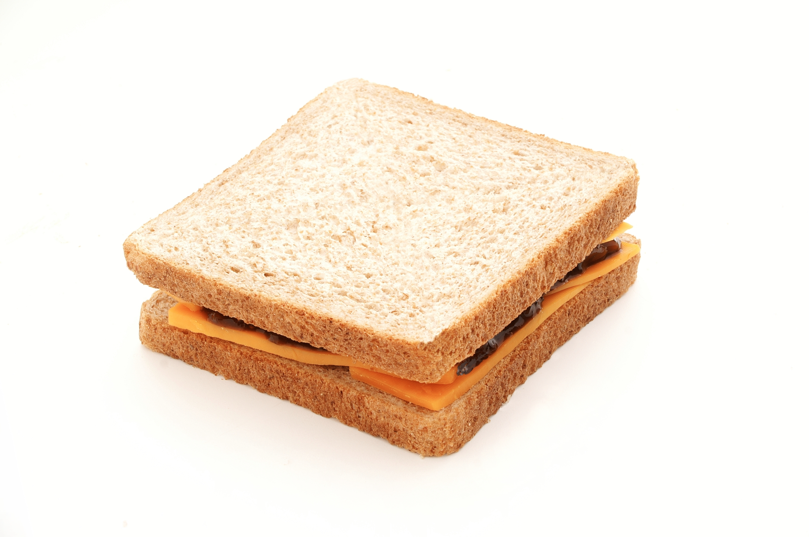

Home
Vanilla Ice Cream

Sometimes the most simple recipe is the best policy
Ice cream is great for those hot summers. This recipe is wildly simple but I think you'll find that it has better flavor than a lot of the options on the market.
Ingredients
- 2 cups Milk
- 2 cups whole milk
- 1 cup sugar
- 1 tsp vanilla extract
Steps
- Mix all ingredients together in a bowl until the sugar is fully dissolved
- Add the mixture to an ice cream mixture until it's the consistency of soft serve.
- Quickly move contents to a tupperware and put in the fridge overnight.
- For easier scooping, leave on the counter for five minutes or so and run the scooper under the hot tap.
*Goes great with homemade chocolate sauce. 1c sugar, 1/4c dark cocoa, 3/4c water simmered on the stove finished with a tsp of vanilla extract, cooled and bottled.